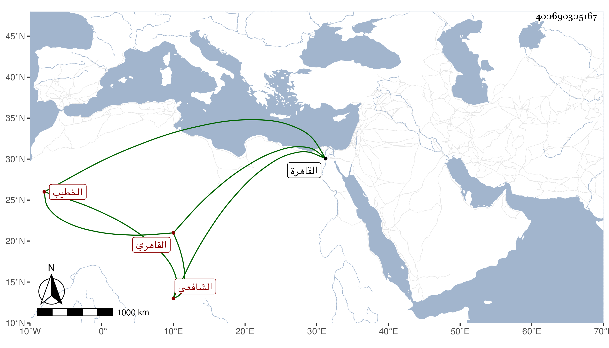

0902Sakhawi.DawLamic.ITO20230111-ara1.EIS1600.400690305167
Biography ID: 400690305167
150
محمد بن أحمد بن محمد بن علي بن إبراهيم فتح الدين بن المحب القاهري الشافعي الخطيب والد المحب أحمد المالكي الماضي وولده البدر محمد ويعرف بابن المحب . ولد تقريبا سنة إحدى وسبعين وسبعمائة بالقاهرة ونشأ بها فحفظ القرآن والعمدة والشاطبية والتنبيه والمنهاج الأصلي وألفية النحو ، وعرض في سنة خمس وثمانين فما بعدها على الأبناسي والبلقيني والعراقي والدميري والصدر الابشيطي وأجازوا له بل ذكر لي أنه كتب عن الزين العراقي من أماليه بالظاهرية العتيقة وأنه سمع من ولده الولي واشتغل يسيرا وحضر الدروس وتكسب بالشهادة وكان ساكنا خيرا خطب بجامع القيمري في سويقة صفية وقرأ الميعاد والحديث بين يدي الشيخ محمد الحنفي ، وأجاز لي . ومات في أواخر جمادى الثانية سنة أربع وخمسين بعد أن تعلل مدة وصار يمشي على عكازين رحمه الله .
